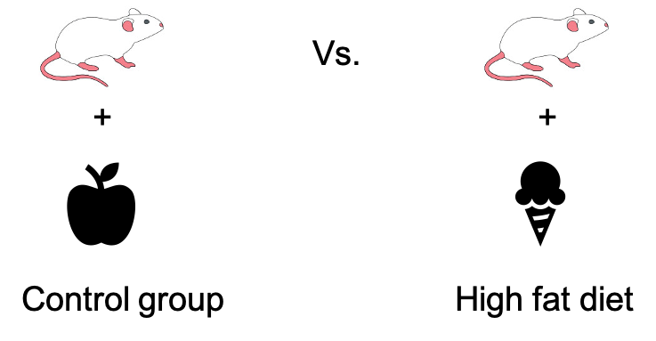
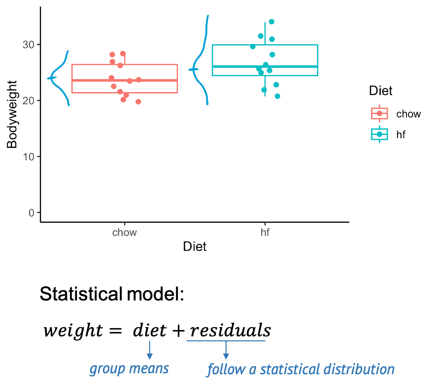
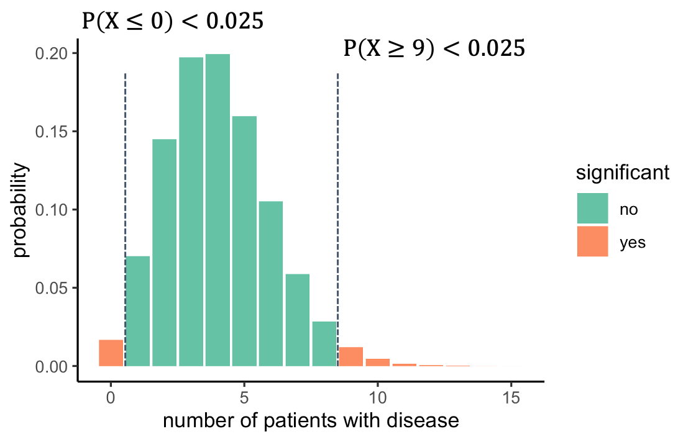
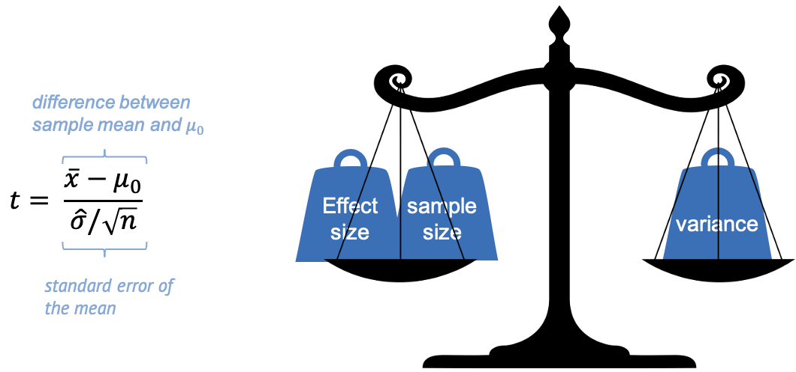
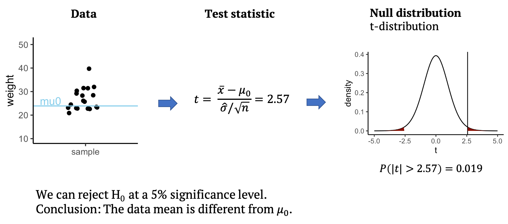
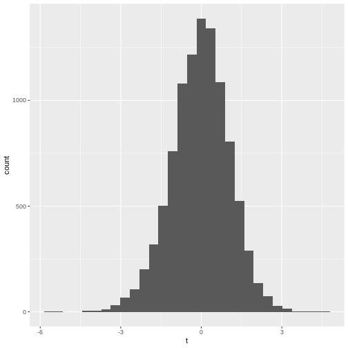
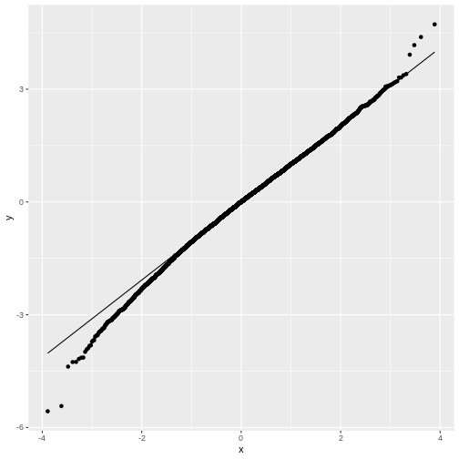
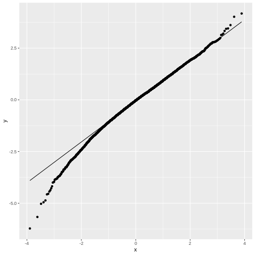
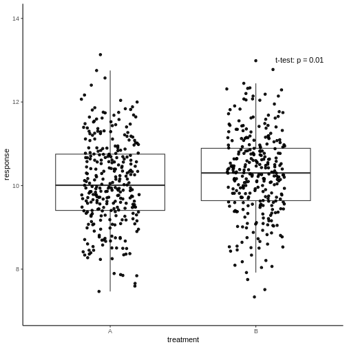

Image 1 of 1: ‘mice with different diets’
Mice with different diets Image 1 of 1: ‘Graph with mice weight measurements’
Does the diet affect the mice’s weight?
Image 1 of 1: ‘[decorative]’
Example: Disease prevalence Image 1 of 1: ‘binomial probability distribution of number of patients with disease’
The null distribution Image 1 of 1: ‘The null distribution of the number of patients with disease, with significant outcomes indicated by colour.’
The null distribution Image 1 of 1: ‘A cup of coffee’
Please take a minute…
Image 1 of 1: ‘Binomial null distribution with one-sided significance indicated.’
One-sided test Image 1 of 1: ‘Binomial null distribution with two-sided significance indicated.’
 We should look on both sides of the distribution and ask
what outcomes are unlikely. For this, we split the 5% significance to
2.5% on each side. That way, we will reject everything below 1, or above
8. The alternative hypothesis is now that the prevalence is different
from 4%.
Image 1 of 1: ‘image of confusion matrix’
Errors in hypothesis testing
Image 1 of 1: ‘graph showing mouse weights of one sample, and a mean to compare them to.’
Scenario for one-sided t-test: Comparing mouse
weights to a single value. Image 1 of 1: ‘Formula for t-statistic, and graph with moise weights indicating sample mean and mu0’
The t-statistic is a scaled difference between sample
mean and \(\mu_0\) Image 1 of 1: ‘Formula for t-statistic, and image of scale’
The t-statistic weighs effect size and sample size
against variance. Image 1 of 1: ‘Schema for performing a one-sample t-test’
One-sample t-test
Image 1 of 1: ‘picture of fireworks’
   Image 1 of 1: ‘Graph showing t-distribution’
The t distribution for different degrees of freedom
(wikipedia)
 Image 1 of 1: ‘image showing a cup of coffee’
Have a coffee! (Image: Wikimedia)
Image 1 of 1: ‘Image of a cookbook for statistical tests’
Cookbook (image adapted from kindpng.com) Image 1 of 1: ‘Computer screen executing wilcoxon test’
In practice (image adapted from kindpng.com)